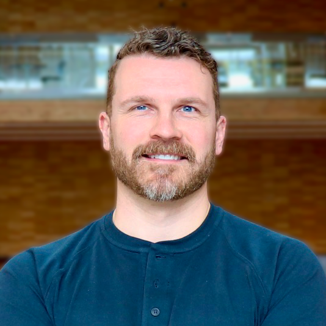
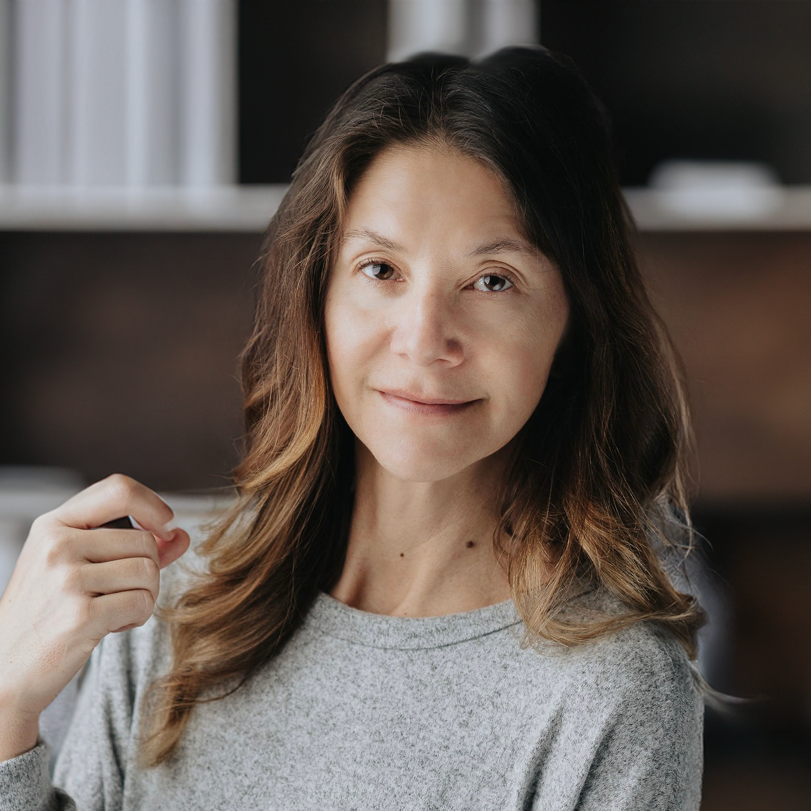
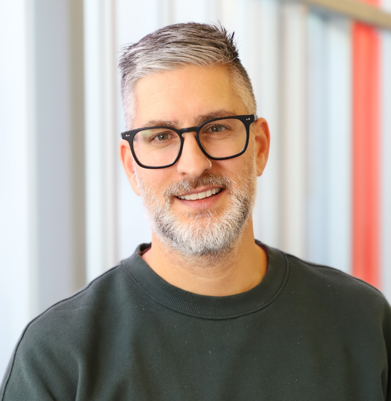

Dr. Jesse Charlton
Applied Musculoskeletal Biomechanics
Dr. Jasmin Ma
Leadership Education & Sport Psychology
Dr. Cailie McGuire
Sport Psychology & Team Dynamics

Dr. Janice Forsyth
Indigenous Land-Based Physical Culture & Wellness

Dr. Daniel Gamu
Systems Biology, Exercise and Health
Why This Panel Matters
Kinesiology is inherently interdisciplinary, yet research and training often occur within disciplinary boundaries. This panel creates space to think across those boundaries — highlighting how different approaches can be brought together to better understand complex questions related to movement, health, and performance.
Rather than treating disciplines as separate silos, this discussion will explore how diverse perspectives can be integrated to address questions that no single approach can fully answer — whether through shared methodologies, complementary theories, or collaborative research design.
The panel also considers how interdisciplinary approaches can support more inclusive and contextually grounded research, recognizing that experiences of movement, health, and physical activity are shaped by social, cultural, and biological factors.
What You'll Take Away
-
How different areas of kinesiology approach complex problems
-
What interdisciplinary collaboration looks like in practice
-
How integrating perspectives can strengthen research
-
Opportunities for interdisciplinary thinking across research, teaching, and practice